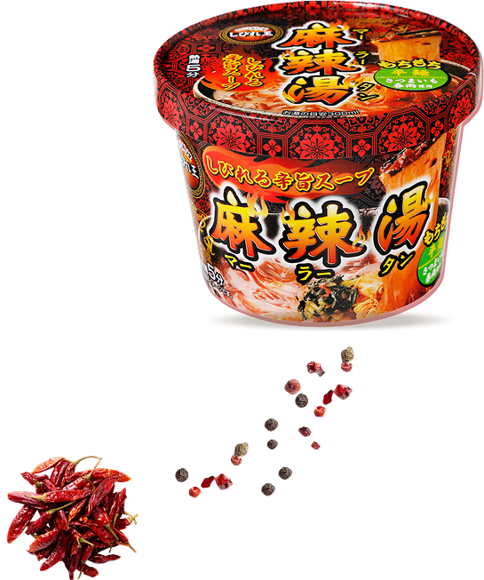
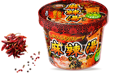
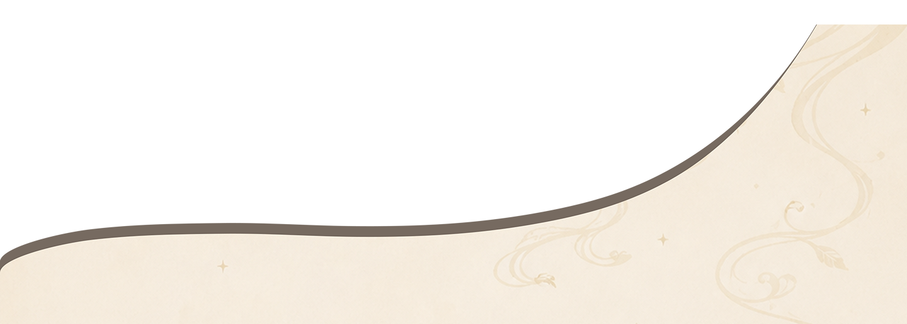
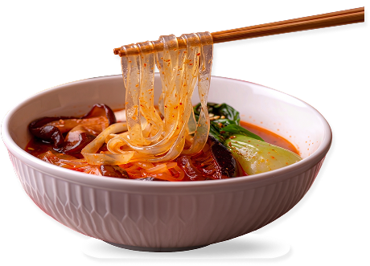
ただ辛いだけじゃないんです。
唐辛子の突き抜ける辛味とそれらを支える濃厚で奥深い旨味のバランスが絶妙すぎて、一口飲んだ瞬間に、脳がこれこれ！と歓喜するレベル。
辛いもの、私はあんまり得意じゃないんだけど、これはハマった！
食べる前は「チーズでまろやかにしようかな」って思ってたけど、これはそのまま食べたいって思ったやつ。
さつまいも春雨って初めて食べたんですが、一般的なカップ春雨の麺とは違うもちもちした食感が新鮮でした。スープもよく絡んで旨いです。夏キャンプのメシに迷ったら、痺辛で攻めるのアリだと思います。
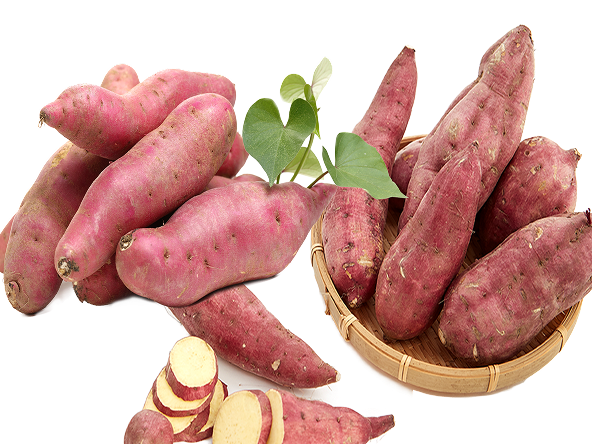
サツマイモでんぷん100%。
グルテンフリー素材を使った麺だから、
夜食にもスルっと罪悪感なく食べられます。
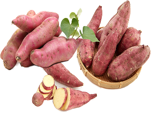
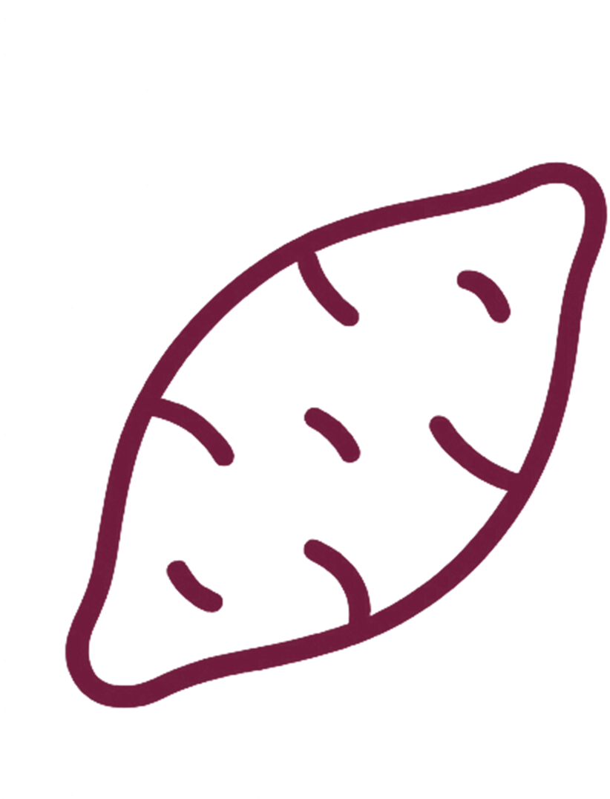
食品添加物・小麦粉不使用。自然素材だけで作られています。
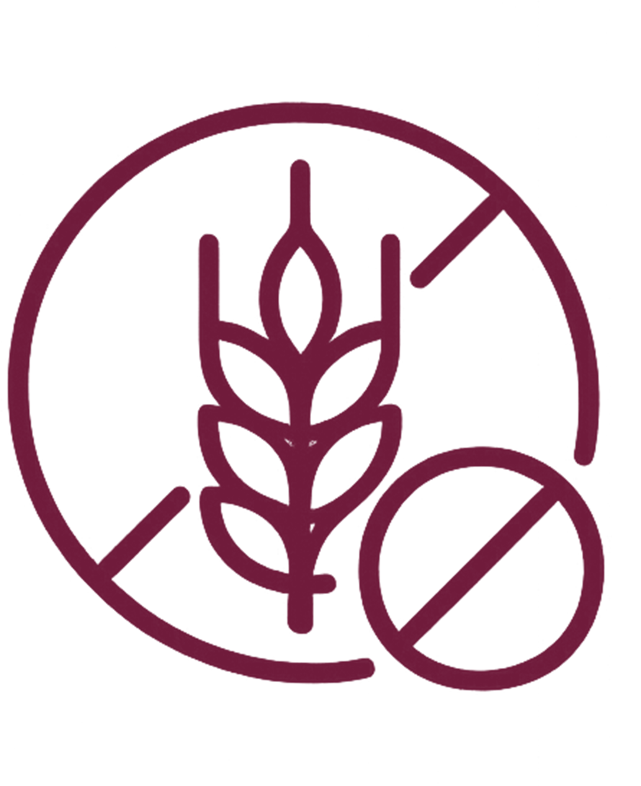
小麦アレルギーの方も安心。身体に優しい麺です。
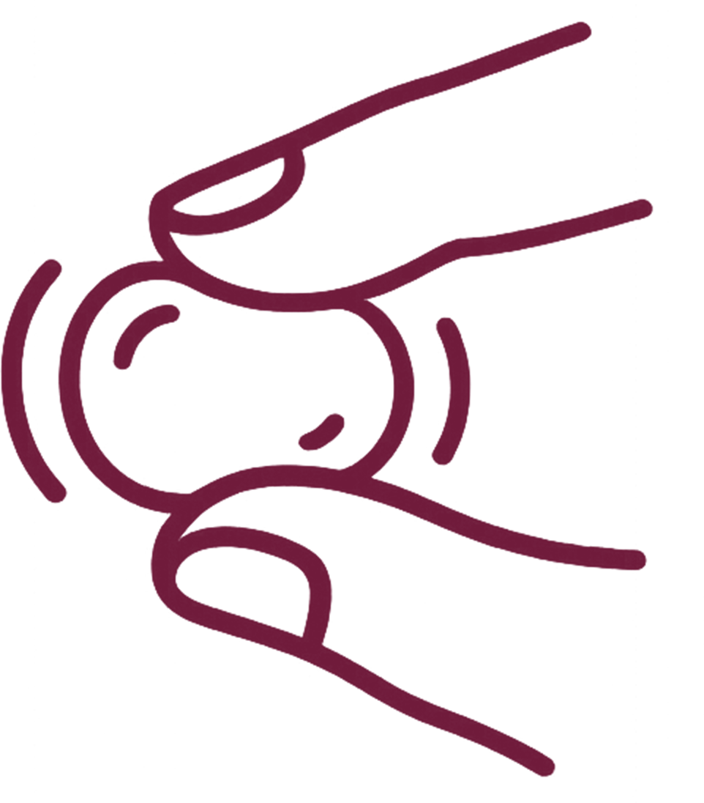
春雨独特のつるっとした喉越しと、噛むほどに感じる弾力。
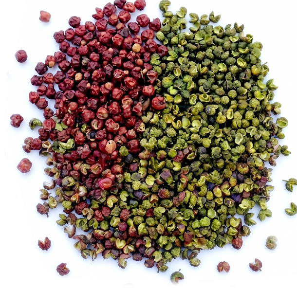
舌がじんわりとしびれる、爽やかな柑橘系の香り。
この独特の感覚が、食べた後の満足感を引き立てます。
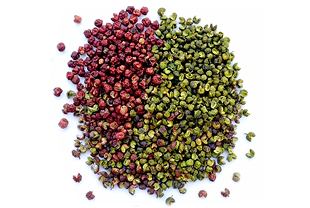
香ばしさが特徴の「赤花椒（ホンホアジャオ）」と、柑橘系の爽やかな香りが際立つ「青花椒（チンホアジャオ／藤椒）」の2種類をブレンド。
レモンピールのような華やかな香りが、食欲を刺激します。
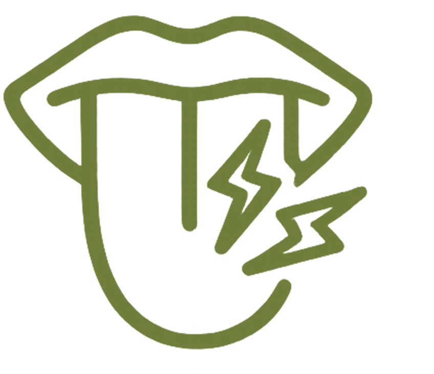
ピリピリとした刺激が、眠っていた味覚を呼び覚まします。
麻辣湯の本場、中国で厳選された花椒を使用。
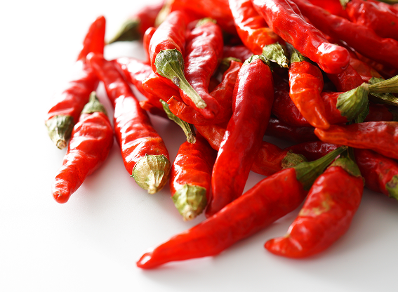
ただ辛いだけじゃない。
旨味を引き立たせる絶妙な辛味が深い満足感が得られます。
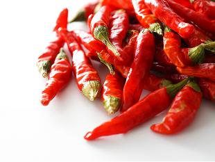
ただ辛いだけじゃない。深いコクと旨みが後を引きます。
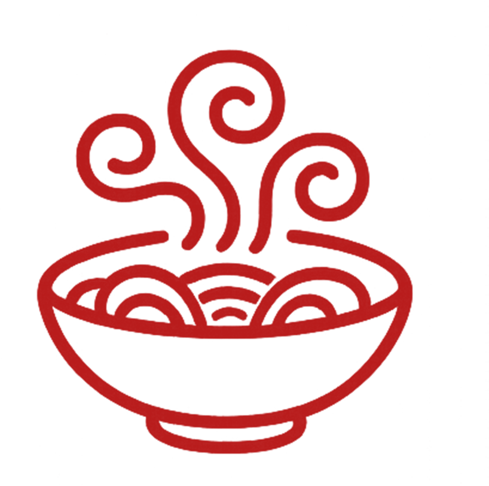
唐辛子の豊かな香りが、食欲をそそります。
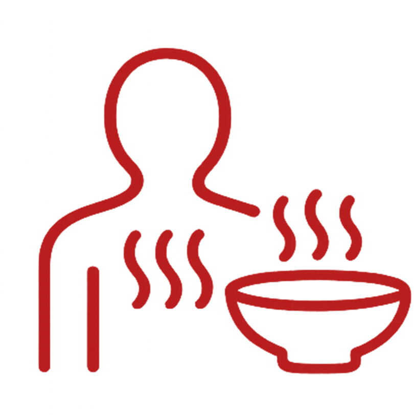
身体の芯から温まる感覚。冷えた夜にぴったりです。
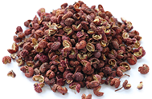
舌のピリピリとしびれる独特の感覚。これが花椒（ホアジャオ）の「麻味」です。
四川料理に欠かせない山椒の一種で、柑橘系の爽やかな香りと共に、舌を刺激する心地よいしびれをもたらします。
このしびれは決して不快なものではなく、むしろクセになる独特の快感。
食べれば食べるほど、この感覚を求めてしまう不思議な魅力があります。
口の中に広がる力強い辛さ。これが唐辛子の「辣味」です。
ただの辛さではなく、旨みと香りを伴った奥深い辛さが特徴。
じわじわと広がり、余韻まで楽しめる本格的な辛さです。
辛さの中にも複雑な味わいがあり、スパイスの香りと共に食欲を刺激します。
汗をかきながらも、もう一口、もう一口と箸が止まらなくなります。
花椒のしびれと唐辛子の辛さが融合したとき、単なる「辛い料理」を超えた、複雑で奥 深い味わいが生まれます。
しびれが辛さをマイルドにし、辛さがしびれを引き立てる。
この絶妙なバランスこそが、四川料理の真髄「麻辣」なのです。
一度この味を知ると、忘れられない。そして何度も食べたくなる、それが麻辣の魔法です。
四川料理しびれ王の麻辣シリーズで、本場の味わいを手軽にお楽しみください。
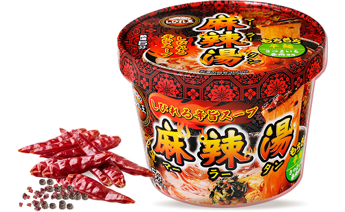
花椒や唐辛子、さつまいも春雨など、使用する原材料はすべて本場中国で選び抜いたものを調達。
香りやしびれ、コクのバランスに徹底的にこだわり、素材一つひとつの個性を最大限に引き出しました。
スープは、中国現地のスタッフと日本の開発担当が一体となり、納得がいくまで何度も試作と調整を重ねて完成させたもの。
現地の本格的なレシピをベースにしながら、日本人の味覚に合うよう絶妙なバランスに仕上げています。
しっかりとした麻辣の刺激と旨みを感じつつも、食べやすく、最後まで飽きのこない味わいが特徴です。
さらに、製造は中国の管理体制の整った工場で行い、品質管理も徹底。
安心・安全にお召し上がりいただける体制を整えています。
しびれ王のカップ麻辣湯は、開発チームが何度も現地中国に足を運び、
「日本人にちょうどいい麻辣の味」を追求し続けてたどり着いた自信作。
本場素材で、日本人に寄り添う美味しさを兼ね備えた一杯を、ぜひお楽しみください。